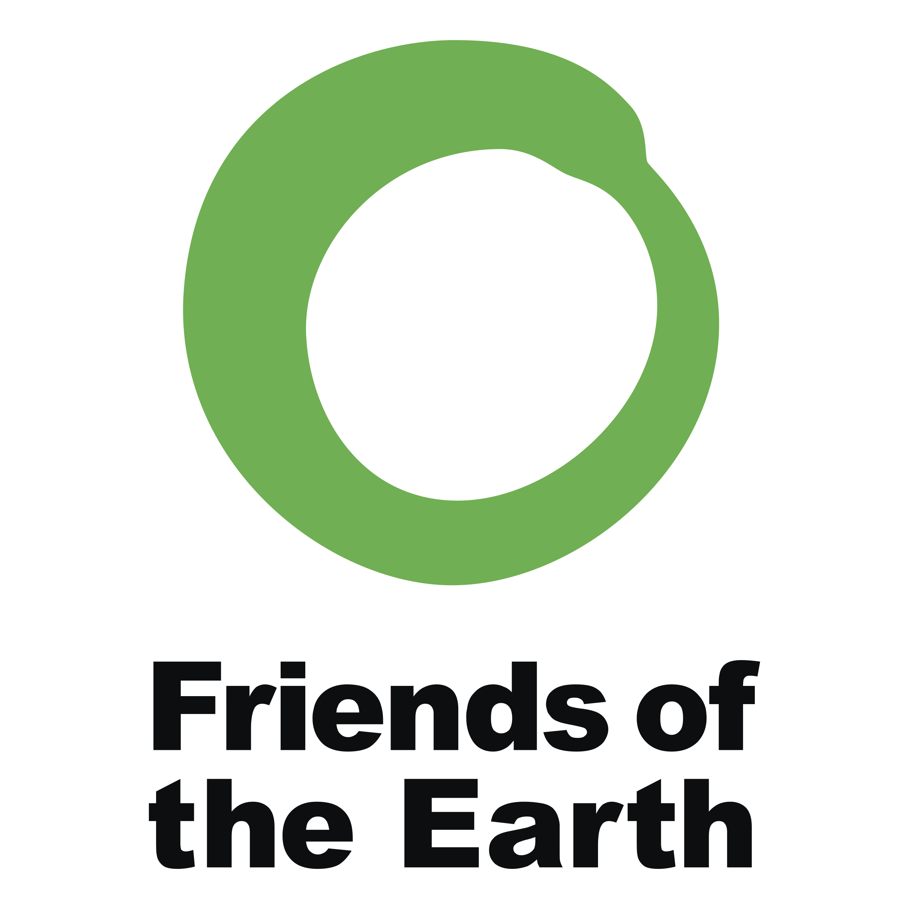

Sobre a loja
A loja de flores "Flowers Shop" é uma das mais renomadas da cidade. Eles se destacam não apenas pela qualidade das suas flores, mas também pela forma como trabalham. Eles são uma empresa consciente, que busca sempre minimizar o impacto ambiental de suas atividades.
A loja tem parceria com algumas das mais importantes organizações ambientais do mundo, como Greenpeace, IBAMA, WWF e Friends of the Earth. Essas parcerias garantem que todas as atividades da loja sejam realizadas dentro dos padrões ambientais estabelecidos pelas organizações.
Para garantir a qualidade das suas flores, a loja trabalha diretamente com produtores locais e pequenos agricultores familiares. Eles dão preferência a flores orgânicas e cultivadas sem agrotóxicos. Além disso, eles utilizam embalagens e materiais recicláveis e incentivam os clientes a fazerem o mesmo.
A equipe da loja é formada por pessoas apaixonadas por flores e pelo meio ambiente. Eles são treinados para atender os clientes de forma personalizada e orientá-los na escolha das melhores flores para cada ocasião. A loja oferece desde buquês simples até arranjos elaborados, sempre com muito bom gosto e requinte.
Graças à sua atuação responsável, a loja de flores "Flowers Shop" é reconhecida como uma empresa modelo no setor. Eles são um exemplo de como é possível aliar a qualidade dos produtos e serviços oferecidos com a responsabilidade socioambiental. A parceria com as organizações ambientais é uma forma de garantir que eles estejam sempre atualizados com as melhores práticas ambientais e possam continuar a contribuir para um mundo mais sustentável.
- 
-